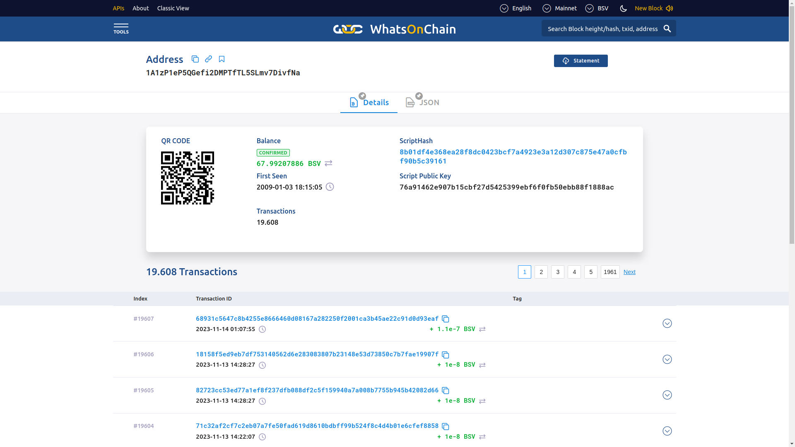

1 Introdução às Tecnologias Blockchain
Visão Geral
APIs, protocolos e Linguagens de Programação Suportados.
1.1 Objetivos
Apresentação de uma Visão Geral sobre o Ecossistema de Tecnologias relacionadas a Blockchain. Surgimento e contexto histórico vinculado ao Bitcoin. Mas o foco principal está na rede Ethereum e componentes do seu Ecossistema. Falaremos um pouco sobre a Ethereum Virtual Machine (EVM) e Contratos Inteligentes. Além disso, uma perspectiva do usuário é apresentada, mostrando a estrutura dos blocos do blockchain da Ethereum, Wallets e softwares clientes, nós e mineradores, ferramentas e APIs, protocolos e Linguagens de Programação Suportados.
1.2 Interesse no termo “blockchain” ao longo do tempo
1.3 Como um Blockchain funciona
1.4 Definição de Blockchain
[alertblock]{Definição de Gosh}
A blockchain is a digital distributed ledger, where transactions are stored in blocks linked to each other with a singly linked list. A block contains a link pointing to its predecessor. New blocks can be appended to the head of a blockchain. Existing blocks cannot be modified or deleted.
[/alertblock]
[alertblock]{Definição de Layman}
Blockchain is an ever-growing, secure, shared recordkeeping system in which each user of the data holds a copy of the records, which can only be updated if all parties involved in a transaction agree to update.
[/alertblock]
[alertblock]{Definição Técnica}
Blockchain is a peer-to-peer distributed ledger that is cryptographically-secure, append-only, immutable (extremely hard to change), and updateable only via consensus or agreement among peers.
[/alertblock]
[framebreak]
- Peer-to-peer
- Distributed Ledger (livro-razão distribuído)
- Criptograficamente Seguro
- Append Only (Permitido somente anexar novos blocos)
- Atualizável via consenso dos pares.
1.5 Como a Tecnologia Blockchain foi desenvolvida
1950s – Hash functions
1970s – Merkle trees - hashes in a tree structure
1970s continued – Research in distributed systems, consensus, state machine replication
1980s – Hash chains for secure logins
1990s – e-Cash for e-payments
1991 – Secure timestamping of digital documents.
1992 – Hashcash idea to combat junk emails
1994 – S/KEY application for Unix login.
1997/2002 – Hashcash
2008/2009 – Bitcoin (the first blockchain)
1.6 Visão Arquitetural de um Blockchain
1.7 Estrutura Genérica de um Blockchain
- Para evitar overhead, os registros são agrupados em blocos. Os registros em um bloco são organizados em uma estrutura de árvore chamada de
Merkle tree[Merkle 1989] para acesso mais rápido.
1.8 Estrutura Genérica de um bloco
1.9 Benefícios e Limitações de um Blockchain
[columns]
[column=0.5]
Benefícios
Descentralização
Transparência
Confiança
Imutabilidade
Alta disponibilidade
Altamente Seguro
Simplificação de paradigmas atuais
Transações rápidas
[column=0.5]
Limitações
Escalabilidade
Adaptabilidade
Regulação
Tecnologia Relativamente Imatura (Ainda)
Privacidade
[/columns]
1.10 Características Principais
Consenso Distribuído
Verificação de Transações
Plataforma para smart contracts
Transferência de valores entre pares
Generação de criptomoedas
Provedor de Segurança
Imutabilidade
Unicidade ou singularidade (Uniqueness)
2 Bitcoin
2.1 Bitcoin
- Surgiu em \(2008/2009\), sendo a primeira rede Blockchain.
- Rede voltada para a Criptomoeda –
Bitcoin (BTC).
2.2 Bitcoin na perspectiva de usuário
- Passos de como enviar e receber pagamentos:
- A transação começa com um remetente assinando a transação com sua chave privada.
- A transação é serializada para que possa ser transmitida pela rede.
- A transação é transmitida para a rede.
- Mineradores que escutam transações pegam a transação.
- A transação é verificada quanto à sua legitimidade pelos mineradores.
- A transação é adicionada ao bloco candidato/proposto para mineração.
- Uma vez minerado, o resultado é transmitido para todos os nós da rede Bitcoin.
- Normalmente, neste momento, os usuários aguardam até seis confirmações para serem recebidas antes que uma transação seja considerada final; no entanto, uma transação pode ser considerada final na etapa anterior.
- As confirmações servem como um mecanismo adicional para garantir que haja probabilidade muito baixa de uma transação ser revertida, mas, caso contrário, uma vez que um bloco minerado seja finalizado e anunciado, as transações dentro desse bloco serão finais nesse ponto.
2.3 Chaves Criptográficas
[columns]
[column=0.5]
- Private keys na rede
Bitcoin- Private keys são usadas para assinar digitalmente transações, comprovando a propriedade dos bitcoins.
- Public keys na rede
Bitcoin- As chaves públicas são usadas pelos nós para verificar se a transação foi realmente assinada com a chave privada correspondente.
- Endereços na rede Bitcoin
- Um endereço
Bitcoiné criado pegando a chave pública correspondente de uma chave privada e fazendo hash duas vezes, primeiro com o algoritmoSHA256e depois comRIPEMD160.
- Um endereço
- Endereços Bitcoin são codificados usando Base58Check.
[column=0.5]
[/columns]
2.4 Não perder as chaves é importante
[columns]
[column=0.5]
[column=0.5]
[/columns]
O Bitcoin Enterrado: A Caça ao Tesouro de James Howells na Vida Real
2.5 Script
- Linguagem simples baseada em pilha usada para descrever como os bitcoins podem ser gastos ou transferidos.
- Avaliada da esquerda para a direita usando uma pilha Last in, First Out (LIFO).
- Composta por dois componentes: elementos e operações.
- Scripts usam vários opcodes para definir suas operações.
2.6 Opcodes
- Aqui estão alguns exemplos de alguns opcodes úteis usados na linguagem
Scriptno blockchain doBitcoin.
2.7 Uma Visualização da Blockchain do Bitcoin
2.8 Bloco Genesis
[alertblock]{Bloco Genesis}
O Bloco Genesis ou bloco \(\#0\) foi hardcoded (codificado) por suas características especiais: ele é o único que não aponta para nenhum bloco anterior. No seu hash foi encriptado o bloco junto com a mensagem “The Times 03/Jan/2009 Chancellor on brink of second bailout for banks”, manchete do jornal naquele dia. Além de servir como prova datada, a manchete escolhida representa justamente uma crítica ao sistema bancário.
[/alertblock]
[framebreak]
[columns]
[column=0.5]

[column=0.5]

Fonte: https://github.com/bitcoin/bitcoin/blob/master/src/chainparams.cpp
[/columns]
[framebreak]
/**
* Build the genesis block. Note that the output of its generation
* transaction cannot be spent since it did not originally exist in the
* database.
*
* CBlock(hash=000000000019d6, ver=1, hashPrevBlock=00000000000000, hashMerkleRoot=4a5e1e, nTime=1231006505, nBits=1d00ffff, nNonce=2083236893, vtx=1)
* CTransaction(hash=4a5e1e, ver=1, vin.size=1, vout.size=1, nLockTime=0)
* CTxIn(COutPoint(000000, -1), coinbase 04ffff001d0104455468652054696d65732030332f4a616e2f32303039204368616e63656c6c6f72206f6e206272696e6b206f66207365636f6e64206261696c6f757420666f722062616e6b73)
* CTxOut(nValue=50.00000000, scriptPubKey=0x5F1DF16B2B704C8A578D0B)
* vMerkleTree: 4a5e1e
*/
static CBlock CreateGenesisBlock(uint32_t nTime, uint32_t nNonce, uint32_t nBits, int32_t nVersion,
const CAmount& genesisReward)
{
const char* pszTimestamp = "The Times 03/Jan/2009 Chancellor on brink of second bailout for banks";
const CScript genesisOutputScript = CScript() << ParseHex("04678afdb0fe5548271967f1a67130b7105cd6a828e03909a67962e0ea1f61deb649f6bc3f4cef38c4f35504e51ec112de5c384df7ba0b8d578a4c702b6bf11d5f") << OP_CHECKSIG;
return CreateGenesisBlock(pszTimestamp, genesisOutputScript, nTime, nNonce, nBits, nVersion, genesisReward);
}[framebreak]
2.9 A carteira de Satoshi
- Carteira:
1A1zP1eP5QGefi2DMPTfTL5SLmv7DivfNa
- Essa primeira transação foi incluída no bloco #0, sob o hash 4a5e1e4baab89f3a32518a88c31bc87f618f76673e2cc77ab2127b7afdeda33b.
[framebreak]
- Detalhes da Transação:
[framebreak]


3 Mas afinal, quem é Satoshi Nakamoto?
3.1 Quem é Satoshi Nakamoto?

[columns]
[column=0.5]
[column=0.5]
[/columns]
Lista de suspeitos no decorrer da história: https://www.infomoney.com.br/perfil/satoshi-nakamoto/
3.2 Tamanho do Blockchain do Bitcoin
- O Blockchain do Bitcoin tinha em October 29, 2017, aproximadamente: \(139GB\)
[framebreak]
- A figura mostra a evolução de Aug 2017 para Jul 2020. Aproximandamente, \(286 GB\).
[framebreak]
- A figura mostra a evolução de Jan 2009 para Set 2022. Aproximandamente, \(426.7 GB\).
Tamanho em 14/04/2023: \(472.9 GB\)
- Tamanho em 09/08/2023: \(502.06 GB\)
- Tamanho em 21/11/2023: \(527.47 GB\)
- Tamanho em 13/08/2024: \(592.72 GB\)
- Tamanho em 16/12/2024: \(622.77 GB\)
[framebreak]
- Tamanho em 16/06/2025: \(665.07 GB\)

3.3 Consumo de Energia
- Pico em Janeiro de 2022: \(204.5~TWh\) por ano.
- Em 21/11/2023: \(137.68~TWh\) por ano.
[framebreak]
- Em 13/08/2024: \(172.26~TWh\) por ano.
- Em 16/12/2024: \(175.87~TWh\) por ano.
- Em 16/06/2025: \(175.87~TWh\) por ano.
Artigo: “Cryptocurrencies on the road to sustainability: Ethereum paving the way for Bitcoin” (December 2022); Bitcoin’s biggest competitor, Ethereum, has reduced its electrical energy requirement by at least 99.84% by changing its method of production.
3.4 Leitura Recomendada
[alertblock]{Leitura Recomendada}
Capítulo 5/6: Introduction Bitcoin: IMRAN BASHIR. Mastering Blockchain : Distributed Ledger Technology, Decentralization, and Smart Contracts Explained, 2nd Edition.
[/alertblock]
3.5 Projetos de Pesquisa
Título: Estudo Exploratório De Técnicas E Mecanismos Para Paralelização Automática E Offloading De Código Em Sistemas Heterogêneos (Pa-Code-Offload).
Pesquisa em Computação Paralela.
Título: Investigação sobre Infraestrutura e Suporte ao Desenvolvimento de Aplicações utilizando Tecnologias Blockchain (PRO-BLOCKCHAIN).
Pesquisa em Tecnologias Blockchain.
3.6 Projetos de Extensão
Título: Escola de Computação Paralela (ECP 2024).
Preparar e ministrar minicursos em temas de Computação Paralela.
Título: Academia Blockchain.
Preparar e ministrar minicursos relacionados às Tecnologias Blockchain.
3.7 Grupo Estudos
GEDVAC: Grupo de Estudos sobre Desempenho, máquinas Virtuais, Arquitetura de computadores e Compiladores da UTFPR-CM.
4 Referências
Capítulo 11: Ethereum 101
Capítulo 12: Futher Ethereum